DJ grew up in a WASP family with Midwestern values, but like many in the 1960s, was seeking answers beyond what she had been raised with. She majored in Religious Studies at UC Santa Barbara, and was drawn to Judaism. She would go on to convert to the faith and to complete a graduate degree at Hebrew Union College in Los Angeles, becoming a Jewish teacher.
While her faith and her Jewish identity remained central throughout her life, in later years she—like many other Jews of her generation—was intrigued by the philosophical disciplines of Buddhism, and found that they were compatible with her nondualistic interpretation of Judaism. DJ was a lifelong advocate of peace, equity and justice, values that she worked to instill in her children, and regularly taught at her seder table. In her absence, her family strives to continue to live up to and pass on these values.
| Thumbnail | Title | Year | Size | Notes |
|---|---|---|---|---|
| 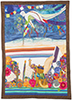 | Piecing Prayers Together | 2013 | 41" x 56.5" | DJ's self-portrait in the style of the Jewish painter Marc Chagall, whose work she greatly admired. |
| Terumah | 1992 | 31" x 49" | Commemorates the bar mitzvah (coming of age) of her eldest son, Marc. | |
| 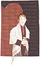 | Ki Teitzeh | 1995 | 33" x 48" | Commemorates the bar mitzvah (coming of age) of her middle son, Adam. |
| 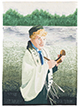 | Dayenu | 1998 | 33" x 45" | Commemorates the bar mitzvah (coming of age) of her youngest son, Joel. |
| 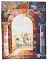 | Jerusalem of Gold | 1998 | 77" x 98" | Honors the tragic death of Israeli Prime Minister Yitzhak Rabin, assassinated by an extremist opposed to Rabin's progress toward peace with the Palestinian people. |
| 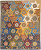 | Kipot Gam Yachad | 2006 | 75" x 91" | "Kipot" is the plural of kippah, also known as a yarmulke, the traditional Jewish men's head covering. The quilt is a blend of traditional and modern quilting styles to evoke a bird's eye view, and the full title means “Jewish head coverings all together.” |
| 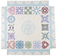 | Huppah | 2000 | 74" x 74" | A Jewish wedding canopy created by the hopeful mother of three sons, looking forward to their weddings. Her eldest son was married under it in 2010. The imagery references California, Jewish holidays, family pets, and also includes a knotwork star that nods to DJ's British and Celtic heritage. Hebrew wedding vows are stitched in using the trapunto technique. |
| 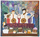 | Massoreh | 2006 | 78" x 71" | Massoreh refers to the passing down of knowledge and responsibility for honoring familial and cultural history and traditions.The quilt depicts a Bat Mitzvah (daughter of the commandments), surrounded by her family (including her ancestors, ghostly figures in the background) and rabbi (teacher). This quilt was gifted to Rabbi Meredith Cahn, who counseled DJ in the last weeks of her life. |
| 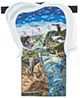 | Psalm 8 | ??? | N/A | DJ's visual interpretation of Psalm 8 |
| It's Passover! | 2010 | 55" x 54" | Honors Berger family traditions surrounding Passover (Pesach). Features various Jewish imagery, as well as DJ's recipe for matzo ball soup, and a photo image from a Berger family seder in the 1940s, with the names of all attendees. | |
| 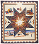 | Walk in Beauty | Circa 1999 | 92" x 103" | DJ loved Tony Hillerman's novels. She started doing research, listening to Navajo music, and of course, designing this quilt. She took the work in progress to several pow wow gatherings to make sure that everything was "kosher" with the symbols and imagery she had chosen: "I put the symbols of the four holy directions in the quilt: Obsidian for the north mountain, Shell for the eastern White Shell mountain, South was Turquoise mountain, and Abalone for the western mountain. Top center is a vase with a KoKopeli design and a woven wedding basket. Sunwise, around the quilt: a Weaver with traditional silver jewelry, the morning pollen blessing, Mesa Verde, Ship Rock, and a Navajo sand painter." |
| 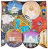 | India | ??? | N/A | A tribute to the rich histories and many cultures and faiths of the Indian subcontinent. DJ had a coworker from Pakistan that she was very close to, and while making him a quilt to celebrate his new baby, she became fascinated by Islamic art, the Silk Road and the surrounding regions and cultures. |
| 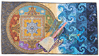 | Lessons From Lhasa | 2018 | 74" x 40" | Inspired when DJ witnessed Tibetan Buddhist monks spend a week creating a painstakingly detailed sand mandala, then sweep it all away and pour it into the ocean, a ritual demonstrating Buddhist doctrinal teachings on the transitory nature of the material world. |
| 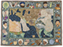 | Silk Road | ??? | N/A | DJ loved to study history and cultural traditions, and was fascinated by the Silk Road, the ancient superhighway for trade between Asia and the Middle East, and later Europe. |
| The Myth | ??? | N/A | Honors Berger family traditions surrounding Passover (Pesach). Features various Jewish imagery, as well as DJ's recipe for matzo ball soup, and a photo image from a Berger family seder in the 1940s, with the names of all attendees. |